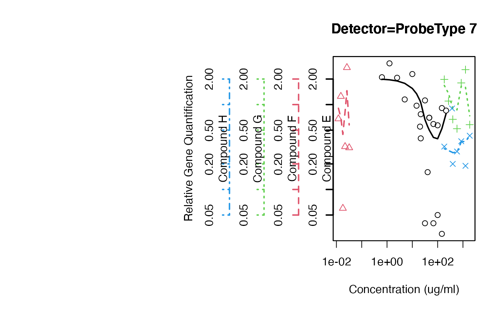
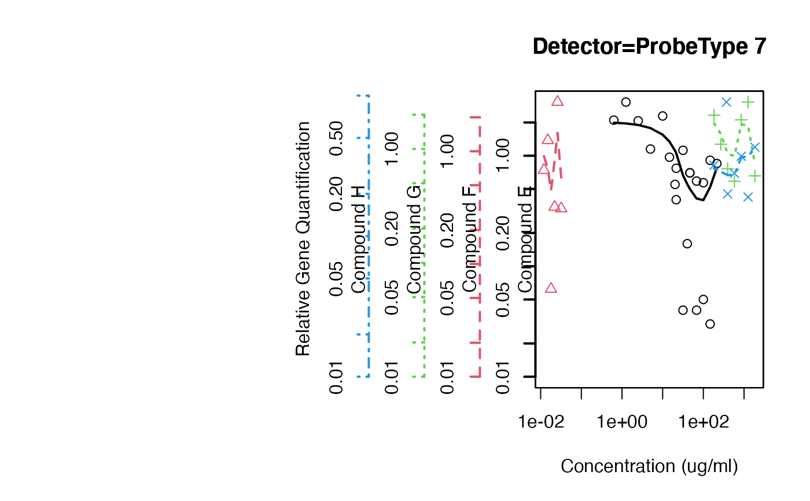

rtPCR.RdrtPCR data for experiments investigating a variety of markers for characterizing teratogenicity.
data(rtPCR)
A data frame with 1672 observations on the following 21 variables.
a factor with levels A0027002 through
A0054019
a factor with levels Compound A through
Compound H
a factor with levels Non
Strong Weak / Moderate
a factor with levels Sample 1 - Sample 152
a factor with levels Rep 1 - Rep 21
a factor with levels Ctrl, Neg. Ctrl
P1 - P9, No Vehicle Ctrl, and Pos. Ctrl
a numeric vector
a factor with levels ProbeType 1 -
ProbeType 17
a numeric vector
a numeric vector
a numeric vector
a numeric vector
a numeric vector
a numeric vector
a numeric vector
a numeric vector
a numeric vector
a numeric vector
a numeric vector
a numeric vector
TBA
Anonymized data.
data(rtPCR) # same scale overplot( RQ ~ Conc..ug.ml. | Test.Substance, data=rtPCR, subset=Detector=="ProbeType 7" & Conc..ug.ml. > 0, same.scale=TRUE, log="xy", f=3/4, main="Detector=ProbeType 7", xlab="Concentration (ug/ml)", ylab="Relative Gene Quantification" )# different scales, but force lower limit to 0.01 overplot( RQ ~ Conc..ug.ml. | Test.Substance, data=rtPCR, subset=Detector=="ProbeType 7" & Conc..ug.ml. > 0, log="xy", f=3/4, main="Detector=ProbeType 7", xlab="Concentration (ug/ml)", ylab="Relative Gene Quantification", min.y=0.01 )